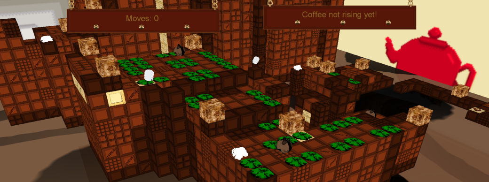

BLogic Caffeine
The game was sone during the first semester in Dundalk Institute of Technology. It was done with a team of 5. The game is programmed in C# and uses the XNA/Monogame framework.
The player plays as a sugar cube. He moves in a grid and can attach to other suger blocks on his path. By attaching to those blocks his movment pattern change.